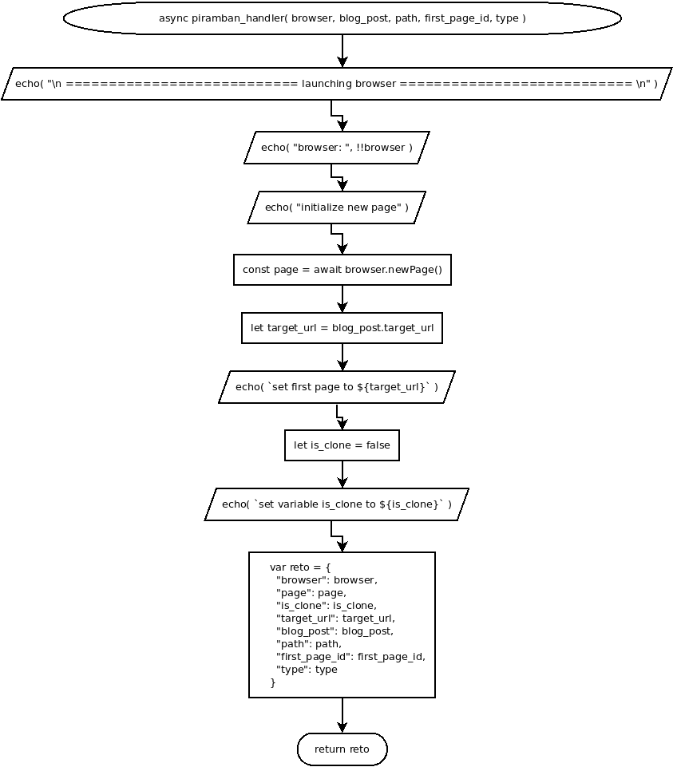

async piramban_handler( browser, blog_post, path, first_page_id, type )
Flowchart

Code
async piramban_handler( browser, blog_post, path, first_page_id, type ){
echo( "\n =========================== launching browser =========================== \n" );
echo( "browser: ", !!browser );
// open new page
echo( "initialize new page" );
const page = await browser.newPage();
let target_url = blog_post.target_url;
echo( `set first page to ${target_url}` );
// set defaut if clone
let is_clone = false;
echo( `set variable is_clone to ${is_clone}` );
var reto = {
"browser": browser,
"page": page,
"is_clone": is_clone,
"target_url": target_url,
"blog_post": blog_post,
"path": path,
"first_page_id": first_page_id,
"type": type
};
return reto;
}